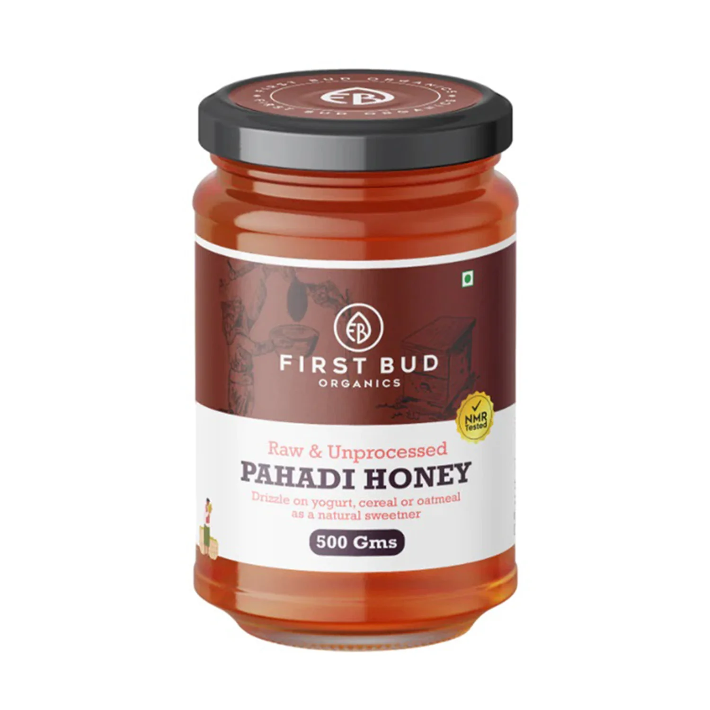

WELCOME TO FIRST BUD ORGANICS
From the farm to your table
Embrace a life of purity and excellence with our commitment to bringing nature's finest directly to your home. From farm to table, our seamless journey ensures the freshest, 100% pure organic delights. Dive into our diverse range of edibles, health, and skincare essentials, all at friendly prices. Trust in our legacy of purity and excellence, and join us in setting new benchmarks for a healthier tomorrow
